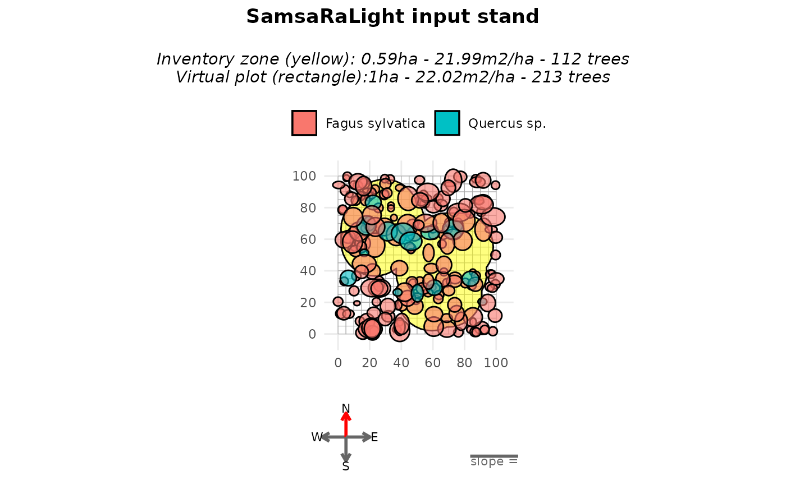
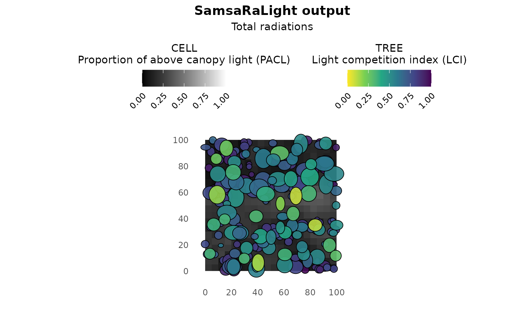

Non-rectangular inventory zone
Source:vignettes/web_only/3c-complex_cases_cloture.Rmd
3c-complex_cases_cloture.Rmd
library(SamsaRaLight)
library(dplyr)
#>
#> Attaching package: 'dplyr'
#> The following objects are masked from 'package:stats':
#>
#> filter, lag
#> The following objects are masked from 'package:base':
#>
#> intersect, setdiff, setequal, unionIntroduction
In previous tutorials, inventories were assumed to be simple, axis-aligned rectangles. In practice, however, forest inventories are often more complex, and may not be necessary rectangle depending on the inventory protocol.
In this vignette, we illustrate the case of an non-rectangular inventory. The sampled area is defined by an irregular polygon (e.g. a combination of circular plots), filled around by virtual trees.
Context and data
We now consider the example inventory Cloture20,
stored in the package as SamsaRaLight::data_cloture20.
This inventory was collected by Gauthier Ligot in Wallonia, Belgium, as part of the CLOTURE project, which investigates the effect of fences on beech and oak plots with varying beech proportions. In this case, the plot is primarily made up of beech trees (Fagus sylvatica). The crowns are described with full asymmetric shapes “8E”. The inventory protocol is complex and resulted in non-rectangular inventory zones formed from multiple circular areas. Thus, the core polygon is defined by 94 vertices:
str(SamsaRaLight::data_cloture20$core_polygon)
#> 'data.frame': 94 obs. of 2 variables:
#> $ x: num 54 56.4 59.1 61.9 64.8 ...
#> $ y: num 70.4 72.2 73.6 74.6 75.2 ...Virtual stand with complex core polygon
First, we can create the virtual stand by setting the pre-defined
core polygon stored in the package. Representing the inventory as a
rectangle in this case would be inconsistent with the field protocol.
Therefore, the polygon is preserved inside a larger virtual stand with
modify_polygon = "none" and the virtual stand is filled
around the inventory zone with fill_around = TRUE.
stand_cloture_filled <- SamsaRaLight::create_sl_stand(
trees_inv = SamsaRaLight::data_cloture20$trees,
cell_size = 5,
latitude = SamsaRaLight::data_cloture20$info$latitude,
slope = SamsaRaLight::data_cloture20$info$slope,
aspect = SamsaRaLight::data_cloture20$info$aspect,
north2x = SamsaRaLight::data_cloture20$info$north2x,
core_polygon_df = SamsaRaLight::data_cloture20$core_polygon,
modify_polygon = "none",
fill_around = TRUE
)
#> SamsaRaLight stand successfully created.
plot(stand_cloture_filled)
summary(stand_cloture_filled)
#>
#> SamsaRaLight stand summary
#> ================================
#>
#>
#> Inventory (core polygon):
#> Area : 0.59 ha
#> Trees : 112
#> Density : 190.5 trees/ha
#> Basal area : 21.99 m2/ha
#> Quadratic mean DBH: 38.3 cm
#>
#> Simulation stand (core + filled buffer):
#> Area : 1.00 ha
#> Trees : 213
#> Density : 213.0 trees/ha
#> Basal area : 22.02 m2/ha
#> Quadratic mean DBH: 36.3 cm
#>
#> Stand geometry:
#> Grid : 20 x 20 (400 cells)
#> Cell size : 5.00 m
#> Slope : 0.00 deg
#> Aspect : 0.00 deg
#> North to X-axis : 90.00 deg
#>
#> Number of sensors: 0Run SamsaraLight
Finally, the radiation data and the simulation run are done as usual:
data_radiations_cloture <- SamsaRaLight::get_monthly_radiations(
latitude = SamsaRaLight::data_cloture20$info$latitude,
longitude = SamsaRaLight::data_cloture20$info$longitude
)
output_cloture_filled <- SamsaRaLight::run_sl(
sl_stand = stand_cloture_filled,
monthly_radiations = data_radiations_cloture
)
#> parallel mode disabled because OpenMP was not available
#> SamsaRaLight simulation was run successfully.
plot(output_cloture_filled)
summary(output_cloture_filled)
#>
#> SamsaRaLight simulation summary
#> ================================
#>
#> Trees (crown interception)
#> ---------------------------
#> epot e lci
#> Min. : 30904 Min. : 694.8 Min. :0.0906
#> 1st Qu.: 139463 1st Qu.: 14399.6 1st Qu.:0.5837
#> Median : 244016 Median : 43603.7 Median :0.7845
#> Mean : 391751 Mean :148147.2 Mean :0.7233
#> 3rd Qu.: 617430 3rd Qu.:273832.3 3rd Qu.:0.8966
#> Max. :1319122 Max. :815029.7 Max. :0.9899
#>
#> Cells (ground light)
#> -------------------
#> e pacl punobs
#> Min. : 91.59 Min. :0.02434 Min. :0.0000
#> 1st Qu.: 356.87 1st Qu.:0.09485 1st Qu.:0.5240
#> Median : 566.30 Median :0.15051 Median :0.6896
#> Mean : 606.90 Mean :0.16130 Mean :0.6293
#> 3rd Qu.: 843.78 3rd Qu.:0.22426 3rd Qu.:0.7710
#> Max. :1532.63 Max. :0.40734 Max. :0.8858
#>
#> Sensors
#> -------
#> No sensor energy variables available